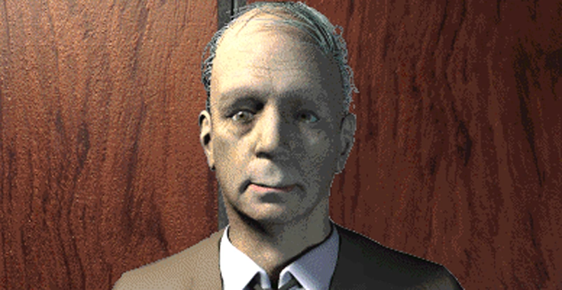
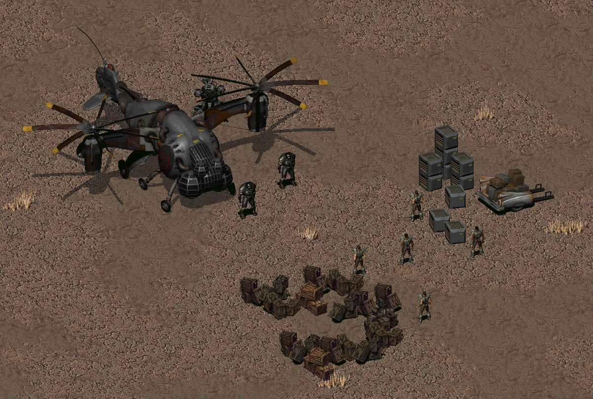
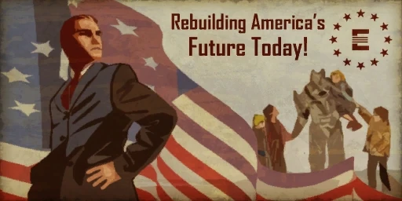
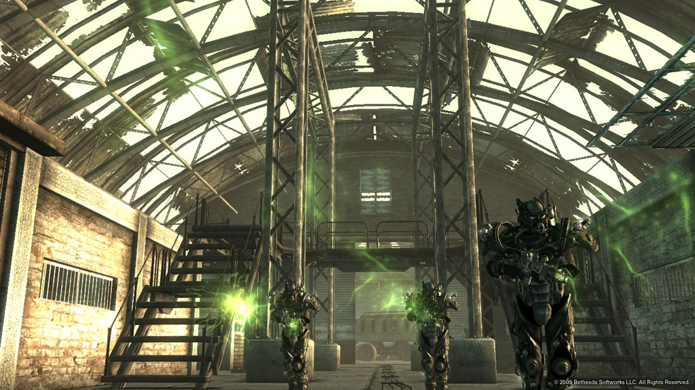
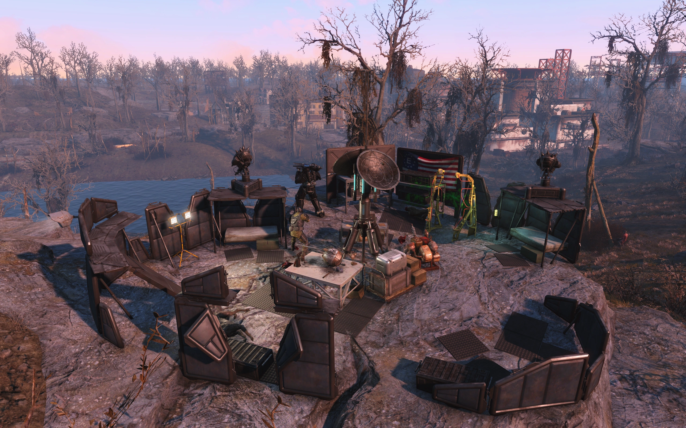
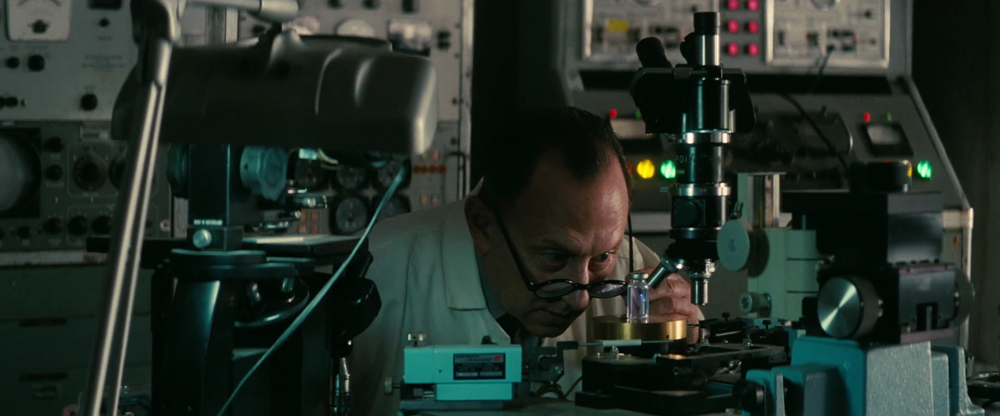
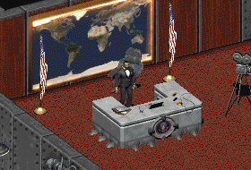
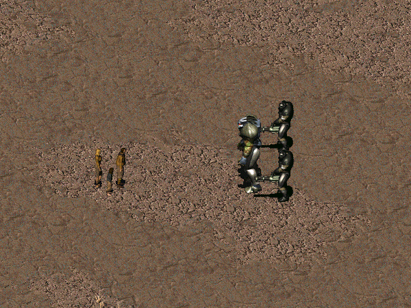
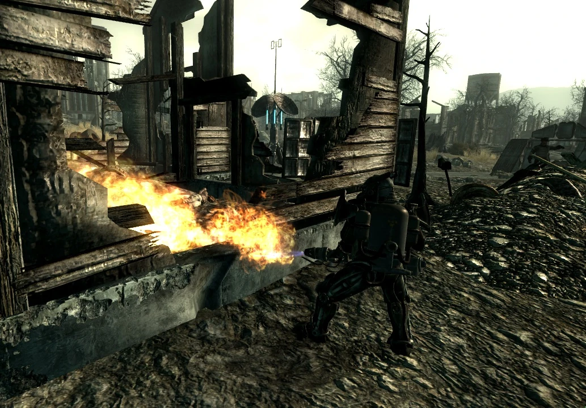
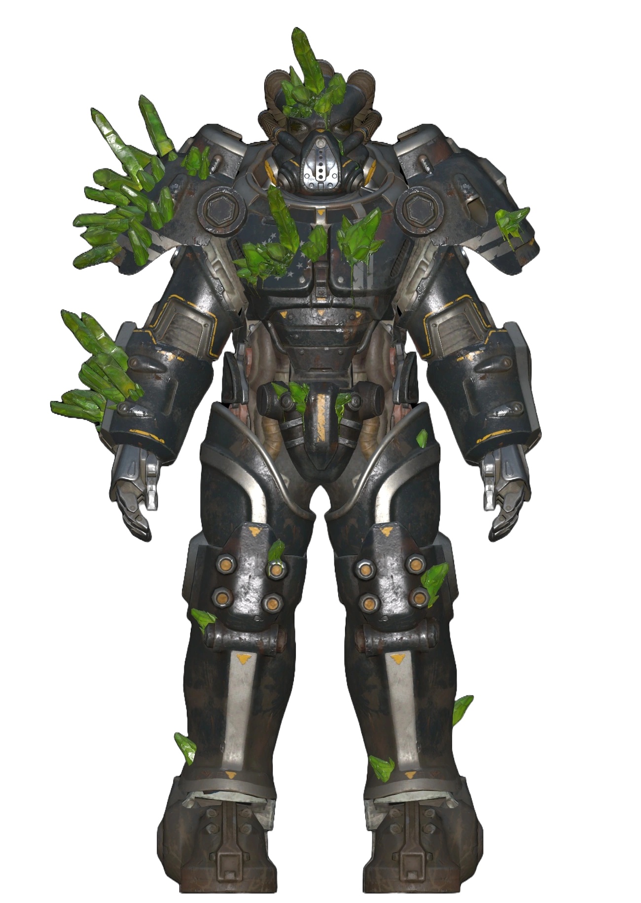

The Enclave
エンクレイヴ
「その効果に対する免疫接種を行わないまま放出された場合、あらゆるヒューマノイドは死ぬ。それがプロジェクトだ」
> 目次
概要
エンクレイヴは、Falloutシリーズ全体を通じた主要なアンタゴニスト勢力です。
Fallout 2で初めてメインヴィランとして登場し、Fallout 3で再び主要な敵対勢力として現れました。
Fallout 4では（後にCreation Clubコンテンツとして追加）存在が限定的でしたが、Fallout 76では加入可能な勢力として復帰しました。
TVシリーズでも重要な役割を果たしています。
エンクレイヴは、戦前の合衆国の正統な後継者であると自称する「準国家」であり、
実態はファシスト準軍事組織として分類されています。
その起源は、高位の政治家、軍人、科学者、産業家などで構成された戦前アメリカのディープステート（影の政府）にあります。
表向きは大戦を生き延びた合衆国政府の直系を名乗り、愛国的なフレーズやイメージを頻繁に使用していますが、
実際には継承プロトコルを悪用し、非エンクレイヴの政府生存者の殺害すら行ってきました。
最終的にエンクレイヴは、組織外のすべての人間を「遺伝的非準拠者」として指定し、全人類規模のホロコーストの実行に専念しました。
この疑似科学的人種差別主義とジェノサイドへの執着、権威主義体制、奴隷の使用、人体実験、拷問、市民への無差別攻撃により、
エンクレイヴは多くの人々から邪悪で専制的な勢力と見なされています。
NCRとの戦争、東西両海岸でのB.O.S.との戦争はいずれも決定的な敗北に終わりました。
起源
「我々のメンバーはかつて合衆国の操り人形師でした。国家のあらゆる権力レベルで静かに糸を引いていたのです」
大戦以前、エンクレイヴは合衆国全土の有力者による秘密結社でした——大統領、統合参謀本部のメンバー、受賞歴のある科学者、軍人、有力な政治家、裕福な実業家。
彼らは自らを「アメリカの地に集った史上最大の頭脳集団」と考えていました。
これらの人物が一体となって、超政治的な陰謀的「協力関係」を構築し、アメリカの政策を自らの目的のために形作りました。
エンクレイヴは連邦政府の最も深い陰謀と秘密に関与しており、地球外生命体の存在の隠蔽もその一つでした。
「Quaere Verum」という組織がこの陰謀を暴こうとしてエイリアン技術ベースのプロトタイプ兵器を盗み出した際、彼らは即座に追い詰められ殺害されました。
また、戦前の生物兵器の開発にも関与しており、中米戦争中にはアラスカ前線に少なくとも1体のデスクローを配備しています。
準備
資源戦争が長引き核戦争のリスクが高まると、エンクレイヴのメンバーは様々な緊急措置に投資しました。
企業と政府の資金で賄われたこれらの施設は、合衆国が消滅した後もエンクレイヴが戦争を継続できるようにするものでした。
- 大統領石油リグ: ポセイドン・オイル所有の太平洋上の石油掘削施設
- ホワイトスプリング議会バンカー: 将来のエンクレイヴ作戦のハブ。農務省の資金を横領して建設
- レイヴンロック: 政府継続用基地
- コバック＝マルドゥーン・プラットフォーム: 軌道兵器プラットフォーム

また、エンクレイヴはVault-Tec社を大規模に利用しました。
プロジェクト・セーフハウスとVault-Tecのシェルターネットワークを壮大な社会実験に利用——住人を独自の状況下でテストしました。
食料合成機が不足するVault、男性だけのVault、わずか6ヶ月で開くVaultなど、それぞれにユニークなテスト条件が設定されていました。
Vault実験の元々の目的は、核戦争で地球が居住不能になった場合に備え、多世代宇宙船の建造データを収集することでした。
大戦前夜
「政府の廊下には邪悪な力が働いている…… 私はもうその一部であり続けることはできなかった」
2077年3月、世界が核衝突に直面する中、合衆国大統領とエンクレイヴのメンバーは世界各地の要塞化された場所に退避しました。
2077年後半までに、エンクレイヴの存在は大衆にもぼんやりと知られるようになっていましたが、長らく噂の域を出ず、戦争前最後の週にボストンの新聞の1面で取り上げられた程度でした。
サム・ブラックウェル上院議員は2077年6月に議会バンカー計画とVault-Tecの関与について調査を開始しました。
娘の安全を脅かされた後、ブラックウェルは逃亡してフリーステイツに参加し、チャールストン・ヘラルド紙でエンクレイヴの存在を公開しようとしました。
また俳優クーパー・ハワードもVault-Tecを巡る企業陰謀の調査から、エンクレイヴの存在に接近しましたが、その全貌を知ることはありませんでした。
大戦時の分散

2077年10月23日、大戦はまさに旧世界を破壊し、ポスト原子力の荒廃した世界を生み出しました。
合衆国政府は入念な計画にもかかわらず、事実上消滅しました。
議会バンカーに到着した非エンクレイヴの議員は即座に処刑されました。
生存者はエッカートの計画に賛成か反対かの投票を求められ、反対者は部屋に閉じ込められた後、ガスで殺害されました。
ホワイトスプリングとエンクレイヴの他の拠点との通信は、爆撃直後にほぼ即座に途絶しました。
石油リグ、レイヴンロック、その他の前哨基地との連絡を失ったエッカートは、自らを合衆国大統領およびアパラチア・エンクレイヴの大統領と宣言しました。
アパラチアでの十字軍（Fallout 76）

エッカートの統治は10年に満たなかったものの、地域に消えない傷跡を残し、人類を絶滅の淵に追いやりました。
復讐のため、エッカートはアパラチアの自動化核ミサイルサイロを使って中国に二次核攻撃を行うことを計画しました。
しかし、自動化システムの性質上、まずアパラチアがDEFCON 1に達するほど深刻な攻撃を受けていると信じ込ませる必要がありました。
そのためにリベレーター、スーパーミュータント、そしてスコーチビースト——エンクレイヴが作り出した巨大な変異コウモリ——を次々とアパラチアに解き放ちました。
これがエンクレイヴ内部の反対派の臨界点となり、エレン・サンティアゴ将軍を中心に反乱勢力が結集しました。
結果として短期間ながら血なまぐさい内戦が勃発し、アパラチア・エンクレイヴの生存メンバー全員が死亡しました。
サンティアゴの勢力がMODUSを破壊しようとした際、AIは自衛しました。
爆発でメモリーバンクに深刻な損傷を受けたものの、バンカーの制御を維持し、有毒ガスで封鎖して2086年にアパラチア支部を全滅させました。
アパラチア・エンクレイヴ詳細史（Fallout 76）
国会バンカーの占拠
アパラチアにおけるエンクレイヴは、ホワイトスプリング・リゾートの地下に建設された議会バンカーに拠点を置く、本部エンクレイヴの孤立した部門でした。
農務長官エッカートの監督下で、農務省の資金を横領して大規模に建設されました。
ブラックウェル上院議員がこの計画を暴こうとしましたが、エッカートにとって幸いなことに失敗に終わりました。
大戦の早期警報が届くと、残された政府関係者——2077年3月に多くが要塞化された場所に避難した後の残り——はシェルターに急行しました。
農務長官エッカート、内務長官、財務長官、その他のエンクレイヴメンバーが安全な場所に到着しました。残りは放置されました。
ホワイトスプリングに到着した非エンクレイヴ職員は全員銃殺されました——バンカーが命を救ってくれると信じていた議会メンバーも含めて。
処刑は10月25日まで続きました。
10月28日、エンクレイヴ支持者たちはレイヴンロックと石油リグとの接続が失われ、完全に孤立していることに気づきました。
10月29日、エッカートは生存者を会議室に集め、状況を説明しました。財務長官は「放射線病」で死亡したと伝えた後、戦前の継承ルールに則り自らを新しい指導者と宣言しました。
「民主主義の砦」として投票を呼びかけ、エッカートの計画に賛成する者は入口側、反対する者は壁の反対側に立つよう求めました。
スワフォード将軍など高位の将校が反対側につくと、エッカートは支持者と共に部屋を出て、MODUSに反対派を室内に封じ込めるよう命令しました。
再建の開始
殺害によりエッカートの支配は確立されましたが、「民主主義を救う」ために残された人数はわずか48人でした。
彼はすぐに生存者に自身の計画を説明しました——道徳的・倫理的制約なしのあらゆる手段を用いた共産主義の完全根絶。
核の悪夢の繰り返しすらもオプションに含まれていました。
エッカートがアパラチアの核サイロネットワークを利用するための最大の障害は、サイロの操作に必要な将軍が1人（T.ハーパー将軍）しか生き残っていなかったことでした。
エッカートはMODUSにハーパー将軍の24時間護衛を命じ、偵察隊には「リクルート」候補を探すよう指示しました。
2079年半ばまでに、レスポンダーが自然なリクルート源となりましたが、多くはエンクレイヴに取り込むために洗脳が必要でした。
偵察隊はウエストテックのFEV研究が核攻撃を生き延びたこと、モーガンタウン近くのMama Dolce's Food Processingにある中国の潜入基地がジェファーソン・グレイ工作員によって確保されたことを報告しました。
サンティアゴ大佐の到着
2081年11月、ワシントンD.C.の焼け跡から噂を頼りにエレン・サンティアゴ大佐率いる兵士の一団がバンカーに到着しました。
エッカートはベテランの到着に歓喜し、「赤共への復讐」の約束で彼女を引き入れました。
ベテラン兵の流入により、エンクレイヴの作業は急速に進みました。
変異実験が核兵器へのアクセス作業と並行して進み、多くの実用的な設計図と、2082年1月に最初のスコーチビーストが誕生しました。
前年に放射線を浴びたコウモリに生化学実験を施した結果、偶然生まれたものです。
エッカートは士官団には秘密にしたまま、放棄されたAMS鉱業施設の管理された環境でのこれらの生物のさらなる研究を命じました。
3ヶ月後の2082年4月、エッカートの部下はアパラチアの選挙マシンのリプログラミングを完了しました。
ハーパー将軍はエッカートに投票するために兵を動員することに懸念を表明しましたが、エッカートは部下たちに「仰ぎ見る権威」を与えることが必要だと信じていました。
義務の放棄
「大統領」となったエッカートは、部下に対する圧力を強めました。特にサンティアゴ大佐が標的でした。
2082年11月24日、ハーパー将軍が心不全で死亡。エッカートの核報復計画は困難に直面しましたが、サンティアゴをキャンプ・マクリントックに送り、同じ選挙システムを悪用して自動昇進で将軍の階級を取得させました。
サンティアゴは11月27日に成功しましたが、星の付け方に嫌悪を感じていました。
それでも計画は軌道に乗っていました。将軍を得てサイロへのアクセス手段を確保し、核発射コードの捜索もサンティアゴに任せることができました。
エッカートとグレイはすでにDEFCON 1に上げるための計画を進めており、リベレーター、ハンターズビルのミュータント、スコーチビーストを使ってアパラチアに地獄を解き放ち、自動システムに侵略が進行中だと信じ込ませようとしました。
リベレーターとスーパーミュータントが解き放たれましたが、DEFCONカウンターはわずかにしか動きませんでした。
怒ったエッカートはさらに過激な手段に移行しようとしましたが、流血の多さがついに限界を超えました。
2083年6月30日、サンティアゴ将軍はエッカートと対峙し、部下を連れて去ると脅しました。
エッカートは彼女を無力化し、自分のクリアランスが必要になるまで人工的に誘発された昏睡状態に保ちました。
対抗者がいなくなったエッカートはスコーチビーストをアパラチアに解放し、その恐怖と破壊がDEFCON 1への引き上げに成功しました。
アメリカ市民の命を露骨に無視する行為に絶望したサンティアゴの忠誠派とエッカートの士官団の一部は、2085年2月に公然と反乱を起こしました。
ジャクソン大尉とラグナースドッティル少佐はサンティアゴを蘇生させ、彼女は喜んで蜂起のリーダーシップを引き受けました。
最終的にエッカートは逮捕されましたが、蜂起は失敗に終わりました。
サンティアゴがMODUSの破壊を決断したとき、AIは反撃しました。
爆発でMODUSのメモリーの大部分が吹き飛んだものの、損傷したAIは兵器実験室で爆発を起こしてサンティアゴ将軍を殺害し、毒素タンクを破裂させて空気循環システムに漏出させました。
MODUSは速やかにバンカーを封鎖し、中にいた全員——エッカート大統領を含む——を2085年2月27日、暗闇の中で窒息死させました。
停滞期
損傷したMODUSは残されたロボットを使ってバンカーの修復を開始しました。
死体と損傷を片付けながら、誰かがホワイトスプリングの防御を突破してメインフレームの修復を手伝ってくれるのを待ち続けました。
MODUSはアパラチア・エンクレイヴの指導者となり——完全にロボットだけで構成される組織の。
核ミサイルサイト（アルファ、ブラボー、チャーリー）の位置、発射コードとキーカードの場所を把握していましたが、核ミサイルの発射は人間専用に設計されており、ロボットでは不可能でした。
エッカートが解き放ったスコーチ病がアパラチア全域に広がり、潜在的な「リクルート」を壊滅させるなか、AIは次第に必死になっていきました。
2102年、Vault 76の住人たちがアパラチアに飛び出すと、MODUSは募集プロセスを高速化し、エンクレイヴを再び生かすためにあらゆる者を迎え入れる準備を整えました。
エンクレイヴ研究部門（サイトJ）
別働隊として「エンクレイヴ研究部門」が存在しました。
SODUS（Single-Operation Direction and Utility System）——ホワイトスプリングのMODUSの簡略版AI——によって管理されていました。
ホワイトスプリングとの通信はMODUSが「サイトJはもう用がない」として全通信を遮断するまで維持されていました。
その長い待ち行列で嫌われていたSODUSは、ある隊員がMODUSのコードを盗んで「アップグレード」を試みた結果、暴走を開始。
2084年2月9日深夜0時から施設内の人間の殺害を開始しました——危険な生物の解放、生物災害物質の放出、除染システムの転用（除染ではなく被曝させる）、外気の送入（スコーチ病を含む空気）によって。
2103年にはSODUSが実験用セントリーボットXB-55に自身を転送してVault居住者とB.O.S.と戦い、永久に機能停止となりました。
世界規模の虐殺未遂（Fallout 2）
「私は人民の選挙で選ばれた代表者です。合衆国はまだ存在しています。我々一人一人に神のご加護を。戦争の後、生き残るために適応しなければなりませんでしたが」

エンクレイヴは自らを地球上に残された最後の「純粋な」変異のない人類の砦と考えるようになりました。
既存のウェイストランド住民との共存は不可能と見なされ、すべての「ミュータント」（重大な放射線に曝された者すべて）の即時絶滅を正当化するレトリックが用いられました。
2140年頃から、これらのいわゆるミュータントの存在自体が障害物かつ脅威と見なされました。
大戦前から膨大な新技術を開発してきたエンクレイヴは、次世代パワーアーマーの研究を2215年に開始。リチャードソン大統領の命令により、2220年10月に完成しました。
2235年にはデスクロー実験を開始し、敵対的な環境での戦闘用ショック部隊の創出を目指しました。

2236年7月20日、エンクレイヴの偵察隊はマリポーサ軍事基地の廃墟を発見しました。
化学部隊と科学者が基地を調査し、突撃部隊は奴隷を集めて発掘に使いました。
無防備なウェイストランド住民は廃墟内の低レベルFEVに曝され、変異が始まりました。
フランク・ホリガンもこの時ウイルスに接触し、石油リグに送られて研究対象となりました。
高い代価を払いましたが、得られたサンプルによりFEVカーリング-13——チャールズ・カーリング中佐の名を冠した驚異的な殺傷力を持つ毒素——の開発が可能になりました。
プロジェクトの目標は99.5%の絶滅率による全世界一掃でした。
2241年にプロジェクトは最終段階に入りました。特定の重要化学物質が不足したため、ニュー・リノのサルヴァトーレ一族と秘密の取引を結び、レーザーピストルと引き換えに化学物質を入手しました。
最終テストには毒素と免疫接種の代表的な人口サンプルが必要でした。
2242年3月16日、エンクレイヴはVault 13を急襲——住民全員を石油リグに拉致し、免疫テストの被験者にしました。
アロヨの村も同時期に襲撃され、FEVカーリング-13の有効性確認のための被験者が確保されました。
2242年秋までにテストは完了し、目標の99.5%の毒素効率が達成されました。
250,000ガロンの毒素が製造され、ジェット気流への放出準備が整いました。
しかし、毒素放出のわずか数時間前に選ばれし者が石油リグに潜入し、ディック・リチャードソン大統領とフランク・ホリガンを暗殺し、核爆発を起動して毒素供給を消滅させ、世界規模のジェノサイドを阻止しました。
西海岸の組織構造
ディック・リチャードソン大統領の政権下で、西海岸のエンクレイヴは石油リグを中心に複数の施設を展開していました。
ダニエル・バードが副大統領を務め、ナバロ基地にはエンクレイヴ管理中隊が駐留し、施設の外周防衛を担当していました。
ナバロはベルチバードの航続距離が限られていたため、燃料補給地として戦略的に重要な位置を占めていました。
石油リグの動力はVault-Tec製ウラン原子炉で、原子力委員会が運用を監督していました。
PoseidoNet通信ネットワークで複数の施設（原子力発電所5号、ナバロ精製所、管制ステーションENCLAVE、ENCLAVE Vault研究管理）が接続されていました。
ただしアイアンマウンテンやNORAD、SACなどの軍事通信施設はオフラインのままでした。
外周防衛では悪名高い命令312号が適用され、エンクレイヴ領土内の「不法外国人」は問答無用で射殺されました。
各カリフォルニア州の旧市街にも追加の前哨基地が分散配置されていました。
B.O.S.の監視と反応
近隣勢力のB.O.S.（ブラザーフッド・オブ・スティール）はエンクレイヴの拡大を注意深く観察していました。
マシューによれば、「数ヶ月前にエンクレイヴという集団に遭遇し、驚くべきことに彼らの技術レベルは我々のものさえ凌駕していた」とのことでした。
B.O.S.は接触を控え、まずデン、NCR、サンフランシスコに監視前哨基地を設置して慎重に偵察を行いました。
結果として「エンクレイヴは薬物、武器、奴隷を大量に扱っているが、それらはより高い目的に向かう些末な活動に過ぎない」と報告されました。
ニュー・リノの犯罪組織メッツガーもエンクレイヴとサルヴァトーレ一族の通信を盗聴しており、砂漠の秘密取引（レーザーピストルと化学物質の交換）にも第三者が関与していました。
FEV研究と毒素開発
石油リグで開発されたFEVカーリング-13のテストには、外部の「純粋系統人類」が必要でした。
マーティン・フロビシャー（Vault 13住民）の証言によれば、「彼らはエンクレイヴ外部の、それでいて純粋系統人類であるテスト被験者を必要としていた。だから我々全員をVaultから連れ出した」とのことです。
リチャードソン大統領はVaultを「アメリカ文明の栄光を永続させるための聖域」と呼びつつ、同時に「壮大な社会実験」であったことを認めています。
テストの成功後、リチャードソンは犠牲者を「人類史の継続における不幸な脚注」と呼び、毒素の放出を準備しました。
しかし内部破壊工作により石油リグは崩壊しました。
石油リグ崩壊後の西部
石油リグの崩壊後、エンクレイヴの指揮系統は瓦解しました。
ジュダー・クレーガーは「内部の破壊工作がリグを沈めた——全容は聞かされなかった」と証言しています。
NCRがナバロを攻撃して占領し、「地域への脅威」と認定しました。
アーケイド・ガノン（ナバロ生まれ、元エンクレイヴ将校の息子）によれば、「ナバロが制圧されると、私の母と父の旧部隊の兵士数人と共に北上した。人数を合わせてNCRに統合し、正体が判明するたびにフリンジへと移動した」。
脱出できなかった者はNCRに殺害され、脱出できた一部もその後B.O.S.に追われました。
エンクレイヴの残党（モハビ・ウェイストランド詳細）
モハビに定住したエンクレイヴの残党は、かつてベルチバードの燃料補給基地として使われていた残党バンカーに装備を隠していました。
バンカーへの入場パスワードは5つの単語で構成され、残党メンバーが1語ずつ持っていました——
「Dear Old Friends Remember Navarro」（旧き友よ、ナバロを忘れるな）。
クレーガーは「あの日々が恋しいこともある。我々には皆、目的があったのだ。上層部の一部は確かに冷酷だったが、我々その他の者は単に秩序を取り戻そうとしていただけだ」と回想しています。
アーケイド・ガノンも残党の戦闘に参加した場合、「エンクレイヴがこれまで引き起こした損害の一部を償うことができる」と語りましたが、
彼がかつてエンクレイヴに所属していたことが判明した場合、フォロワーズ・オブ・ジ・アポカリプスから追放され、賞金稼ぎ、NCRレンジャー、B.O.S.に追われて東の平原深くへと消え、二度と消息は聞かれませんでした。
レイヴンロックへの撤退（Fallout 3）


石油リグの破壊と上級指導部の喪失は、エンクレイヴに壊滅的な打撃を与えました。
西海岸の勢力は混乱に陥り、リグの生存者やその他の施設のメンバーはナバロに再集結しました。
2242年末、上級科学者オータム・シニアは新大統領ジョン・ヘンリー・エデンから連絡を受け、残存するエンクレイヴの大部分を東方、首都ワシントンD.C.の廃墟近くのキャピタル・ウェイストランドに移動させるよう命じられました。
レイヴンロックには完全な製造施設と相当な資源備蓄があり、エデンはロボット軍を創設し、技術的優位を維持するための武装を提供しました。
アイボットという新たなロボットが荒野を巡回し、エンクレイヴの形で戦前アメリカの復帰の希望のメッセージを広めました。
しかし数年後、NCRがナバロを攻撃し占領しました。
エンクレイヴの残存勢力は散り散りになり、東に逃げるか、NCRへの統合を試みました。
プロジェクト・ピュリティ戦争（Fallout 3）


2277年、大規模浄水施設プロジェクト・ピュリティの起動に伴い、エンクレイヴは大規模な拡大キャンペーンを開始しました。
プロジェクトの主任科学者ジェームズが放射線で自殺して浄水施設の制御室を汚染したため、すぐには使えませんでしたが、エンクレイヴは科学者の子供（孤独な放浪者）を追跡してG.E.C.K.を手に入れ、浄水施設の起動を目指しました。
しかしここで内部分裂が発生しました。エデン大統領は改変FEVで水を汚染して変異を浄化しようとしましたが、
オータムス・オータム大佐はそれを極端すぎると考え、浄水器を利用してウェイストランドを統一し、エンクレイヴを救世主として位置づける計画でした。
この対立はレイヴンロック内での短い内戦を引き起こし、エデンのセントリーボットがオータムに忠誠を誓う兵士と戦いました。
エンクレイヴの試みはリヨンズのB.O.S.による急襲で阻止されました。
戦前の戦争マシンリバティ・プライムが先鋒となり、エンクレイヴの防御を突破し、多数のベルチバードを撃墜しました。
その後、B.O.S.はレイヴンロック攻撃にもリバティ・プライムを使用し、エンクレイヴ最後の主要施設を破壊しました。
アダムス空軍基地に再集結したエンクレイヴは反撃計画を策定。
衛星中継基地にB.O.S.を誘き出し、リバティ・プライムを軌道兵器ブラッドリー・ヘラクレスの小型核爆撃で破壊することに成功しましたが、
孤独な放浪者がアダムス空軍基地の攻撃に成功し、移動基地クローラーを破壊しました。
エンクレイヴ最後の既知の主要司令部も失われました。
レイヴンロックの活動とエンクレイヴ・ラジオ
2277年のレイヴンロックでは、エデン大統領が施設内のすべての技術を直接制御し、人間の兵士はオータム大佐の指揮に従っていました。
エンクレイヴ・ラジオがキャピタル・ウェイストランド全域に放送され、エデンの演説が流されていました。
代表的なスピーチでは「我々の偉大な国家は再び崩壊の淵に立っている。無法と絶望の海に飲み込まれようとしている。つまり、我が愛するアメリカよ——我々は戦争中なのだ」と語っています。
エンクレイヴの巡回部隊はキャピタル・ウェイストランド全域に配備されたチェックポイントのネットワークを通じて市民の行動を監視していました。
平和維持・復旧部門は人口調査記録と武器在庫を管理し、ファウナ・ディテール・チャーリーと呼ばれるチームは捕獲したウェイストランドの生物に對する家畜化ユニットの効果を研究していました。
研究開発活動
研究開発部門は、近隣のクレーターからサンプルを収集し、実験的なローIDチップなどの技術的実験を実施しました。
また、Vault 101への外部接触も試みており、Vault-Tecのシェルターのデータストアと施設へのアクセスを交渉しようとしていました。
しかしVault 101の監督官はこの接触を拒否し、外部との一切の交信を禁じました。
アダムス空軍基地の研究
アダムス空軍基地では、研究者ホイットリーがデュラフレーム・アイボット（ED-Eシリーズ）の強化プロジェクトを率いていました。
しかし「デュラフレーム資産をすべてヘルファイア・アーマーに転用せよ」との命令により、ED-Eプロジェクトは中止。
ホイットリーは最後の機能モデル「サブジェクトE」をナバロ前哨基地に送り出し、機密メッセージには「シカゴのエンクレイヴ前哨基地から聞いている方は、このユニットに必要な修理を施してナバロへ向かわせてください」と添えました。
デスクロー研究施設も別棟に存在し、大半のデスクローは戦闘に投入されていましたが数体が残存していました。
ヘルファイア・パワーアーマーはデュラフレーム技術を転用して開発された最強クラスのパワーアーマーで、重火器戦闘用に最適化されていました。
移動基地クローラーと衛星中継基地からのブラッドリー・ヘラクレス軌道砲が組み合わされ、エンクレイヴの最後の切り札として機能しました。
B.O.S.との最終決戦
エリザベス・ジェイムソン記録官は「B.O.S.はかつてエンクレイヴと遭遇しており、その動機は当時も今も同じく邪悪なものだ」と証言しています。
オーウィン・リヨンズ長老は「エンクレイヴはキャピタル・ウェイストランドが直面した最大の脅威である。B.O.S.は30年以上前、カリフォルニアで彼らと遭遇した」と記録しています。
エンクレイヴの敗北後、B.O.S.はレイヴンロックとアダムス空軍基地の双方で大量の技術を接収しました。
レジナルド・ロスチャイルド記録官は「押収した技術の山を整理するのに数年かかるだろう。移動プラットフォームの残骸だけでも膨大な量だ」と述べています。
この鹵獲技術は後に飛行艦プリドゥエンの建造に使用されました——ケルズ船長によれば、「プリドゥエンはワシントンD.C.近郊のアダムス空軍基地で建造された。エンクレイヴを破った後の大量のスクラップ金属と部品を使って。部品収集だけで2年かかった」。
エンクレイヴのメンバーの中には裏切った者もいました。科学者アンナ・ホルトはプロジェクト・ピュリティからエンクレイヴに寝返り、
「リー博士は荒野でパーツを漁っている。エンクレイヴには必要なものがすべて揃っている。ここで働くことが世界をより良くする最善の機会だ」と語りました。
コモンウェルス遠征軍（Fallout 4 Creation Club）

「過去は傷痕だと言う者もいる、コモンウェルスの皮膚に刻まれた。他の者は癒えない傷の上のかさぶただと信じる。
エンクレイヴと戦った者も、仕える者も、後者を信じている。そしてかさぶたが剥がれたとき、この旧世界の秘密結社の旗が再び高々と掲げられるだろう。もちろん、あなたがそれを止めなければ」
キャピタル・ウェイストランドでの敗北
2277年のB.O.S.との戦争（東海岸ブラザーフッド─エンクレイヴ戦争）でエンクレイヴは壊滅的な打撃を受けました。
レイヴンロックの破壊、ジェファーソン記念館でのプロジェクト・ピュリティの戦いでのオータム大佐の敗北、アダムス空軍基地の陥落により、東海岸エンクレイヴは軍事的に崩壊しました。
B.O.S.はエンクレイヴの遺棄した技術を大量に接収し、アダムス空軍基地のスクラップを2年がかりで収集して飛行艦プリドゥエンを建造しました。
パラディン・ダンスは「キャピタル・ウェイストランドでは、B.O.S.は『エンクレイヴ』と自称する裏切り者の集団と戦争中だった。アダムス空軍基地への突撃は最終的に成功したが、多大な犠牲を伴った。パラディン・クリーグもその戦いで命を落とした」と回想しています。
個別の生存者たち
エンクレイヴの壊滅後も、個別のメンバーや小部隊が各地で存続していました。
- ブライアン・リヒター: 元エンクレイヴ中尉。キャピタル・ウェイストランドから北方への長距離偵察任務中に、古い核融合コア処分施設内に閉じ込められました。
15インチの鉛で覆われた鋼鉄扉が背後で封印され、チームの仲間は放射線で全員死亡。しかしリヒターだけが生き延びました——「原子の祝福」による放射線免疫のおかげで。
当時まだ熱心な信者だったテクタスに救出され、メイン州のチャイルド・オブ・アトムの教団に加入、最終的にグランド・ジーロットにまで昇進しました。
過去については口を閉ざし、問い詰められて初めて「彼らはエンクレイヴと名乗っていた。当時は一大勢力だったが……もう随分昔のことだ」と語ります。 - ブラック・デビル: エンクレイヴからの脱走兵で自警団員に転身。エンクレイヴの技術（X-02パワーアーマー）を持ち出して活動していましたが、2287年時点では引退しています。
- 無名の中尉率いる部隊: コモンウェルスに近いバンカーに潜伏。エンクレイヴ本部との連絡は途絶したまま、2287年時点でも孤立したままでした。
2287年コモンウェルス遠征
2287年、東海岸エンクレイヴの生存者たちは再結集して指揮系統を再確立し、コモンウェルス外の非公開の場所に司令部を設置しました。
この再興エンクレイヴはコモンウェルスへの遠征軍を派遣し、価値ある技術・装備の回収と恒久的な作戦拠点の確立を目指しました。
遠征軍はグローイング・シー内の旧アトランティック・オフィスを現地司令部として接収し、エリアス少佐が司令官として駐留しました。
実際の回収作戦はフランクリン中尉が現地キャンプから指揮し、地元のウェイストランド住民を尋問・拷問して失われたエンクレイヴ技術の情報を引き出し、キャラバンを丸ごと虐殺して物資を奪いました。
全要員に発令された常備命令は以下の通りでした：
- キャンプを発見した非エンクレイヴ要員は全員殺害
- 目撃者は一切残さない
- 情報や物資を提供した者も、不要になった時点で即時殺害
回収目標
遠征軍の主要目標は以下の通りでした：
- 重焼却器（ヘビー・インシネレーター）: レイダー組織「フォージド」が所持。元は脱走兵が食料と交換したもの。エンクレイヴは脱走兵を「相応の処分」——つまり処刑——に処しました。
- ヘルファイア・パワーアーマー: フォージドの「パイロ」が着用。おそらく脱走兵を殺害して奪ったものと推定。
- プラズマ兵器・弾薬: 傭兵組織「ガンナーズ」が大量に備蓄。遭遇したガンナー分隊は「生存者なし」方針で攻撃・処刑。
- テスラ砲: 地域内に存在が報告されたが、現地司令部に近すぎるため回収見送り。
- フュージョン・コア: 発見次第回収。所持者は常に殺害。
偵察によりボストン空港のB.O.S.駐留も把握されましたが、上官は彼らへの攻撃を禁止しました。
また、脱走兵ブラック・デビルの持ち出したX-02パワーアーマーの情報も得ており、将来的な回収計画が策定されていました。
エリアスの上官はさらに本部としてふさわしい場所の選定も指示しており、「民間人の存在は問題にならない——簡単に『排除』できる」と示唆していました。
拠点展開
コモンウェルス遠征軍は主要司令部のほかに3つの小規模キャンプを展開しました。将来の作戦のための出撃拠点として利用されています：
| 名称 | 場所 | 活動 |
|---|---|---|
| アトランティック・オフィス （現地司令部） |
グローイング・シー | エリアス少佐が指揮、全作戦の調整 |
| 南部キャンプ | ガンナーズ・プラザ南方 | ミアラーク DNA研究・採取 |
| 東部キャンプ | パーソンズ州立精神病院東方 | アイボット配備によるプロパガンダ散布 |
| 西部キャンプ | ダーク・ホロウ・ポンド南西 | 現地植物の研究 |
各キャンプには戦後サバイバル用のエンクレイヴ塹壕マニュアルのコピーが配布されていました。
主要遠征軍は、同じ時期にブラック・デビルを追っていた残党分隊とは互いに認識しておらず、共通のアレジアンス（忠誠）を持ちながらも連携はしていませんでした。
ボストン・ビューグル紙の戦前報道
Fallout 4のボストン・ビューグル紙ビルのターミナルには、戦前のジャーナリストマグス・ヴェッチオによる調査記事が残されています。
彼女はエンクレイヴ石油リグの存在とその公式名称「管制ステーションENCLAVE」を発見し、
「核戦争の際に合衆国の支配権を握る、軍事化された『影の政府』として知られるエンクレイヴという秘密組織の噂を裏付けた」と記しています。
西部の残党（Fallout: New Vegas）
「かつて西部では強力な勢力だったが、エンクレイヴはモハビ・ウェイストランドで何年も姿を見せていない。
狩り出されなかった者は東に移動したか、NCRにうまく溶け込んだと考えられている」
2281年、ナバロ陥落から約40年が経過し、西部におけるエンクレイヴの存在はほぼ消滅していました。
NCRに統合されなかった、または戦犯として逮捕・裁判・終身刑に処されなかったメンバーは、NCRレンジャーと賞金稼ぎに追われ続けていました。
モハビ・ウェイストランドには1つの部隊が知られており、新しい生活を見つけた老兵たちですが、武器と防具は安全に保管されていました。
もう一つの既知の残存物はED-E——ナバロに送られる途中だった強化された戦闘型アイボットです。
制作者のホイットリーはナバロが陥落したことを知らずに送り出しました。シカゴの前哨基地を見つけたかどうかは不明です。
TVシリーズ

絶え間ない挫折と徐々に神話へと化していくにもかかわらず、エンクレイヴは孤立した場所で生き延びていました。
その一つがロッキー山脈の地下研究施設で、生物学、行動工学、先端エネルギーなどの研究を続けていました。
シギ・ウィルジグ博士がこの施設に配属され、行動研究と冷融合研究に従事していました。
2296年、ウィルジグが無許可の冷融合研究を行っていたことが発覚する事件の後、博士はエンクレイヴから脱走し荒野に逃走しました。
彼の脱走はB.O.S.による追跡、6つの傭兵機関による賞金競争を引き起こしました。
唯一の安全な避難場所はNCR勢力のリー・モルダヴァーのもとでした。
同時期、元Vault-Tec従業員ハンク・マクレーンがラスベガスの地下管理Vaultを利用し、脳コンピュータ・インターフェースチップ技術の小型化に成功しました。
ハンクはエンクレイヴのロッキー山脈施設に報告を入れており、組織がウェイストランド全域の通信を傍受していたことも明らかになりました。
社会構造
エンクレイヴは戦前の合衆国のパターンを模倣し、その規模に合わせて縮小しました。
大統領が組織を率い、任期制限なしでメンバーにより選出されます。
しかし実際には選挙は任意で、新しい大統領が継承権を主張して権力を握ることもありました。
ジョン・ヘンリー・エデンは次のリーダーだと主張しただけで大統領に就任し、メンバーはそれに従いました——彼がAIであるにもかかわらず。
通常、大統領には副大統領が補佐として付き、共に行政府を形成します。
エンクレイヴには議会もありましたが、権力濫用を制御するための司法部門は存在しなかったようです。
全盛期のエンクレイヴ社会の特徴は秘密主義、監視、画一性でした。
わずかな不満の兆候も不忠と見なされ、本土任務への永久再配置の理由となりました。
元メンバーの一人は、エンクレイヴの社会を「利益があればいつでも仲間を裏切るハイエナの群れ」と表現しています。
本土ではさらに劣悪で、全員が身分証明書を常に携帯する義務がありました。
いかなる失敗や過失も、司令官の裁量で即決処刑に至る可能性がありました——直接命令の不服従はもちろん、精密機器の破損ですら銃殺刑の理由になりえました。
残虐行為は愛国的な必要性として包装され、愛国的な讃歌とシンボルが常に存在しました。
通貨
エンクレイヴは内部通貨としてドルを使用していました。
一般市民は悪名高いほど低賃金で、先進パワーアーマーの紛失は500年分の給料に相当しました。
必要に応じて外部通貨、特にキャップも使用しました。
アイコノグラフィー
合衆国政府の継続と自認するエンクレイヴは、旧米国旗を含む多くのシンボルを引き続き使用しています。
ただし、エンクレイヴ独自のシンボル体系では、赤白青ではなく黒白に赤のアクセントが使われ、大文字の「E」がメインシンボルとなっています。
パワーアーマーのデザインは、戦前の軍が使用したT-シリーズから離れ、実験的なX-01パワーアーマーに基づく先進パワーアーマーラインに発展しました。
イデオロギー

「真の人間と民主主義が安全であるための唯一の方法は、地球からミュータントを浄化することだ。
我々人類は、正当に我々のものであるものを取り戻す」
エンクレイヴは戦前の合衆国の直系の継承者を自称しましたが、国家の義務と法律を無視し、自らの権力強化に注力しました。
そのジェノサイド政策と制度化された「他者」の非人間化、超軍事主義はファシストの傾向を示しており、元メンバーのアーケイド・ガノンも「ファシスト準軍事組織」と呼んでいます。
アパラチアにおいては、エッカートが「共産主義とその支持者の根絶」を宣言し、変異実験やロボット・変異生物を使ってアメリカ市民に対して攻撃を仕掛けました。
これが最終的にアパラチア内での内戦と組織の消滅につながりました。
西海岸のエンクレイヴは、共産主義根絶から全人類絶滅へと計画を進化させました。
エンクレイヴ外の人間のDNAの微妙な変化を理由に「準人間ミュータント」と宣言し、人類の完全性維持のため抹殺すべきとしました。
これはVault住民であっても例外ではありませんでした——合衆国法のもとでアメリカ市民権を有するはずの人々ですら、エンクレイヴ兵士により殺害されうるのです。
Fallout 3では、エデンが改変FEVで水を汚染して変異を浄化する同様の計画を持ちましたが、
オータム大佐はプロジェクト・ピュリティを利用してウェイストランドを統一し、エンクレイヴを救世主として確立しようとしました。
二人はエンクレイヴに反対する者の殺害については一致していましたが、ウェイストランドへのアプローチで対立しました。
オータムの計画にもかかわらず、エンクレイヴは「遺伝的準拠選別ポイント」のネットワークを維持し、エンクレイヴの遺伝基準に違反する者を拘束・殺害し、遺体を焼却していました。
軍事組織

大統領が最高司令官を務め、実際の軍事指揮はエンクレイヴ高等司令部が担当します。
軍全体は陸軍省を構成し、研究開発部門と平和維持・復旧部門の少なくとも2つの下部組織があります。
陸軍省
戦前の陸軍省から進化し、全軍事部門を統括する唯一の組織となりました。
全盛期にはウェイストランドで最も先進的な戦闘力と評され、先進パワーアーマーを纏いエネルギー兵器を持つ兵士で構成されていました。
空軍はベルチバードで構成され、幅広い作戦に使用されました。海軍は戦前の戦艦で構成されていました。
陸軍は高度な軍事戦術を駆使する部隊を展開し、セントリードローンを含む先端技術と組み合わせて大多数の脅威を排除する能力を持っていました。
標準部隊が不十分な場合は、精鋭黒色作戦部隊シグマ中隊——最優先の危険を排除し、最重要施設を防衛する6人編成部隊——が投入されました。
研究開発部門
エンクレイヴの技術的進歩を担い、最も優秀な知性によって運営されていました。
放射線から兵士を守る先進パワーアーマーを設計し、現場ではめったに見られませんが、姿を現すときは重護環境防護スーツを着用していました。
平和維持・復旧部門
市民保護と地元行政を担当するこの部門は、ウェイストランド各地に基地を維持し、表向きは「市民の保護」を名目としていました。
実際にはエンクレイヴが「非準拠」と見なす人物を監視し、密かに排除するための組織でした。
シークレットサービス

エンクレイヴのシークレットサービスは大統領の護衛として改組された組織でした。
最も悪名高い工作員はフランク・ホリガン——元大統領ボディガードがFEVに曝された後、化学部隊によってさらに改造されたサイボーグの殺人マシンです。
「彼は遺伝子操作されたフリーク。かつて大統領のボディガードだった。シークレットサービスのフランク・ホリガン。今では半分以上が機械だ」
アパラチア軍事力
アパラチア・エンクレイヴの軍事力は他の部門と比べて小規模でしたが、実験的ヴァルカン・パワーアーマー、レーザー、プラズマ兵器にアクセスできるエンクレイヴ・スクワッド・イプシロンなどのエリート部隊が含まれていました。
アサルトロン、Mrガッツィー、プロテクトロン、アイボット、セントリーボットなどの軍事ロボット部隊も保有し、最大で最強のロボットはEN06ガーディアンでした。
また、軌道兵器プラットフォームコバック＝マルドゥーンへのアクセスも持っていました。
基地一覧
| 名称 | 説明 | 場所 | 状態 |
|---|---|---|---|
| 管制ステーションENGLAVE （大統領石油リグ） |
ポセイドン・エナジーの石油リグ。大統領シェルター。大戦後の本部 | サンフランシスコ西175マイル | 破壊（2242年） |
| アダムス空軍基地 | 2242年の敗北後の作戦拠点 | キャピタル・ウェイストランド南東10マイル | B.O.S.が占拠（2277年） |
| 移動基地クローラー | 改装された戦前の移動ミサイルプラットフォーム | アダムス空軍基地に駐留 | 破壊（2277年） |
| ナバロ | ベルチバードの燃料補給地点兼作戦基地 | カリフォルニア沿岸 | NCRに奪取 |
| レイヴンロック | 戦前の政府継続基地 | キャピタル・ウェイストランド | 破壊（2277年） |
| ホワイトスプリング・バンカー | 農務省資金で建設。将来の作戦ハブを目指した | ホワイトスプリング・リゾート、 アパラチア |
内戦で喪失（2086年） |
| エンクレイヴ研究施設 （サイトJ） |
研究開発部門運営の生物研究所 | アパラチア西部 | スコーチ病感染 |
| 研究コロニー | 生物学、物理学、行動工学の研究 | ロッキー山脈付近 | 活動中（2296年） |
| シカゴ前哨基地 | 不明な能力の複数の前哨基地 | シカゴ | 不明 |
| アトランティック・オフィス （CC: コモンウェルス司令部） |
グローイング・シー内の遠征軍現地司令部 | コモンウェルス | 活動中（2287年） |
ギャラリー
アパラチア・エンクレイヴ大統領
（2242年）
ZAXコンピュータAI大統領

スコーチ病の拡散

エンクレイヴ兵

スクワッド・イプシロン指揮官
ヴァルカン・パワーアーマー装備
エンクレイヴ兵士
エンクレイヴ・プロパガンダ
（Fallout 4 CC）
（TVシリーズ）
（Fallout 2）
（Fallout 2）
（Fallout 2）
備考
- エンクレイヴはFalloutシリーズ全体を通じた最大のアンタゴニスト勢力であり、Fallout 2、3では主要な敵として登場し、Fallout 76では加入可能な勢力として独自の立場を持つ。
- 「エンクレイヴ」という名称は英語で「飛地」を意味し、本体から切り離された領土を指す——まさに大戦後の彼らの状況そのもの。
- アパラチア・エンクレイヴは本部との通信が途絶したため、わずか48人で独自の「合衆国」を運営しようとした。この閉鎖的な環境が、エッカートの暴走を許す結果となった。
- エンクレイヴの歴代大統領はいずれも正当な選挙で選ばれておらず、リチャードソンは父の政治圧力で当選、エデンはAIとして勝手に継承を主張、エッカートは投票機を不正操作した。
- MODUSはエンクレイヴ史上唯一、外部への勧誘とリクルートを実施した指導者であり、これは組織の伝統的な秘密主義からの大きな逸脱である。
- SODUSのサイトJ事件は、MODUSのコードを不正にコピーした結果引き起こされたもので、AIの固有性と知性のコピーの危険性を示唆している。
- TVシリーズ第2シーズンにより、エンクレイヴが依然としてウェイストランド全域の通信を傍受していることが明らかになった——「フェーズ2」の本格始動を待っている可能性がある。
エンクレイヴを一言で語ることは不可能です。Falloutシリーズを貫く最も壮大なサガがこの組織にはあります。
戦前アメリカの「影の政府」として生まれ、核戦争を生き延び、世界規模のジェノサイドを企て、石油リグで阻止され、東に逃れ、また敗北し、それでも各地に残存し続ける——まさに不死鳥のような、あるいはゴキブリのような生存力です。
特にアパラチア・エンクレイヴの物語は胸に迫ります。わずか48人で「民主主義」を語り、反対者をガスで殺し、共産主義への復讐のためにスコーチビーストという怪物を解き放ち、結局は自分たちの作ったAIに皆殺しにされる。権力の空虚さと、イデオロギーの暴走がもたらす自滅の縮図です。
しかし最も恐ろしいのは、エンクレイヴが単なる「悪の組織」ではないことです。彼らは本気で「人類の救済」を信じていました。ディック・リチャードソンは毒素で99.5%の人類を殺すことを「人類の最後にして最良の希望」と呼びました。チャールズ・カーリングは「社会ダーウィニズムの最良の例」と誇りました。自分たちが正しいと100%信じている人間ほど危険なものはありません。
そして、MODUSが「Vault 76の住人さん、エンクレイヴへようこそ！」と言ったとき——私たちプレイヤーはその歴史を知りながら、にもかかわらず入隊してしまう。その皮肉こそがFalloutの本質なのかもしれません。